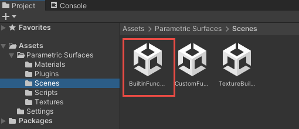
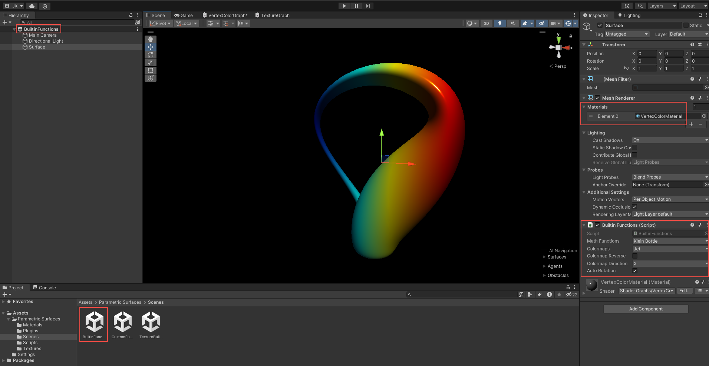
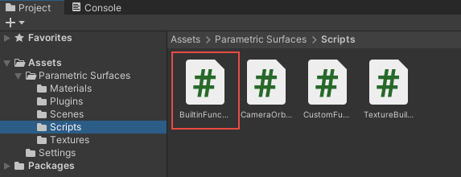

Demo: Built-in Functions
This demo illustrates how to utilize 26 built-in mathematical functions provided in the ParametricSurfacesLib library to generate 3D parametric surface plots. You can select the mathematical function from the MathFunctionEnum dropdown menu in the Inspector. Additionally, you can adjust the colormap and other parameters for the plots in real-time either in the Scene View or the Game View.
Set up the Scene
The demo examples in the Parametric Surfaces package include three Scenes located in the Parametric Surfaces/Scenes folder:

Double-click on the scene named BuiltinFunctions to access the demo for built-in mathematical functions:

In the Scene view window, you'll see the parametric Klein bottle surface displayed with the default jet colormap. In the Hierarchy window, there is only one GameObject named Surface. Clicking on Surface bring up its Inspector, where you can inspect the surface's properties. The material is specified using VertexColorMaterial. Additionally, the surface is attached to a C# script named BuilinFunctions.cs, which exposes several properties for manipulating the surface plot.
C# Script
To examine the C# script file used in this demo, navigate to the Parametric Surfaces/Scripts folder, double-click on the BuiltinFunctions.cs file:

This will open the BuiltinFunctions.cs file in Visual Studio. Here is the code list for this script:
using ParametricSurfacesLib;
using System;
using UnityEngine;
[RequireComponent(typeof(MeshFilter))]
[ExecuteInEditMode]
[Serializable]
public class BuiltinFunctions : MonoBehaviour
{
public MathFunctionEnum MathFunctions = MathFunctionEnum.KleinBottle;
public ColormapEnum Colormaps = ColormapEnum.jet;
public bool ColormapReverse = false;
public ColormapDirectionEnum ColormapDirection = ColormapDirectionEnum.Y;
public bool AutoRotation = true;
private Mesh mesh;
private ParametricSurfaceData psd;
private ParametricSurfaceData.VertexData data;
void Start()
{
psd = new ParametricSurfaceData();
mesh = new Mesh();
GetComponent<MeshFilter>().mesh = mesh;
CreateSurface();
}
void Update()
{
#if UNITY_EDITOR
if (!Application.isPlaying)
{
bool needsUpdate = mesh == null ||
UnityEditor.Selection.activeGameObject == gameObject;
if (needsUpdate)
{
CreateSurface();
var mf = GetComponent<MeshFilter>();
mf.sharedMesh = mesh;
}
}
#endif
if (Application.isPlaying)
{
CreateSurface();
if (AutoRotation)
{
psd.RotateObject(transform);
}
}
}
void CreateSurface()
{
psd ??= new ParametricSurfaceData();
psd.ColormapName = Colormaps;
psd.ColormapReverse = ColormapReverse;
psd.ColormapDirection = ColormapDirection;
data = psd.GetDefaultSurfaceData(MathFunctions);
mesh.Clear();
mesh.vertices = data.Vertices;
mesh.colors = data.Colors;
mesh.triangles = data.Triangles;
mesh.RecalculateNormals();
}
}
First, we introduce the ParametricSurfacesLib library with the following using statement:
using ParametricSurfacesLib;
Next, we define several public fields whose values can be modified in the Inspector, including MathFunctionEnum, ColormapEnum, ColormapReverse, and ColormapDirectionEnum. All these fields are included in the ParametricSurfacesLib. The Start and Update methods are standard for a typical Unity project.
The key method to utilize the ParametricSurfacesLib library is the CreateSurface method. Inside this method, we establish the relationships between the public fields defined in the Inspector and the fields implemented in the ParametricSurfaceData class in the ParametricSurfacesLib library. Next, we call the GetDefaultSurfaceData method to generate corresponding data, including Vertices, Colormaps, UVs, and Triangles (or Indices), for the 3D parametric surface. Subsequently, we assign this data to the Unity mesh object.
Note that we don't assign the UV coord data to the mesh because we don't want to map any image texture onto our surface in this demo.
Finally, we call the mesh.RecalculateNormals method to calculate the normal vector data that will be used for lighting.
Start Play Mode
let's begin the Play mode by clicking the Play button. You'll see the default Klein bottle surface with the jet colormap. You can rotate, pan, and zoom the plot using your mouse, as demonstrated in the image below:

Next, clicking on the Colormaps dropdown menu reveals a list containing over 60 colormaps:

You can select any colormap from this list to update the surface plot in real-time. For example, selecting the cool colormap from this list results in the following Klein bottle surface with the cool colormap. Additionally, checking the Colormap Reverse box reverses the cool colormap for the surface plot:

This means that our ParametricSurfacesLib library contains over 120 colormaps (61 colormaps plus 61 reversed colormaps) that allow you to set colors for your 3D surface plots.
You can also create various parametric surfaces by selecting different mathematical functions from the MathFunctions dropdown menu, which contains 26 built-in mathematical functions. The image below showcases selected parametric surfaces with different colormaps:

Furthermore, you can adjust other parameters such as the smoothness and metallic in the Material section within the Inspector to enhance the appearance of your 3D parametric surface. Particularly, checking the Auto Rotation box enables continuous rotation of the surface plot on your screen.